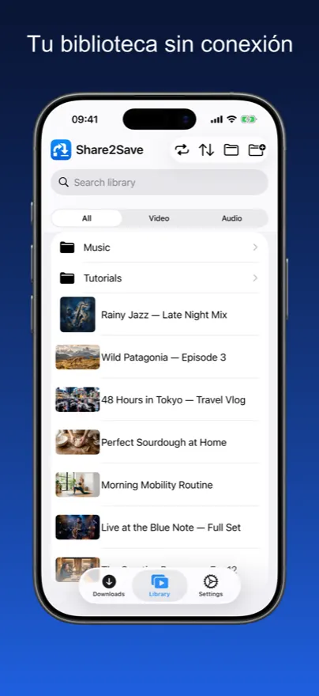
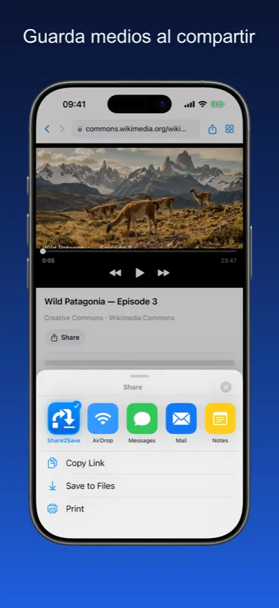
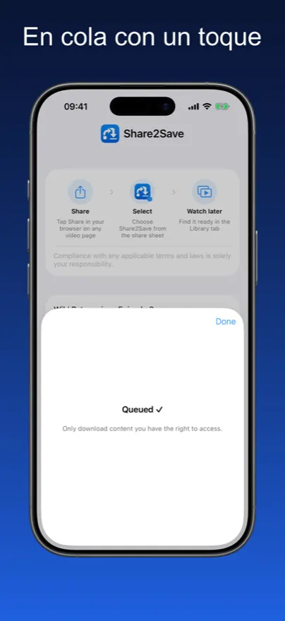
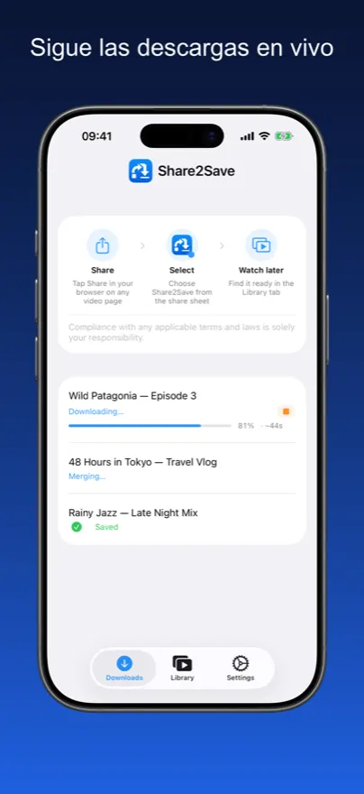
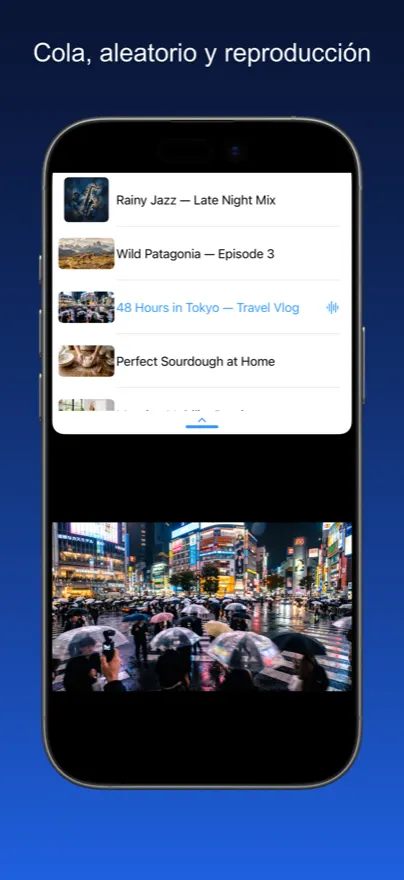
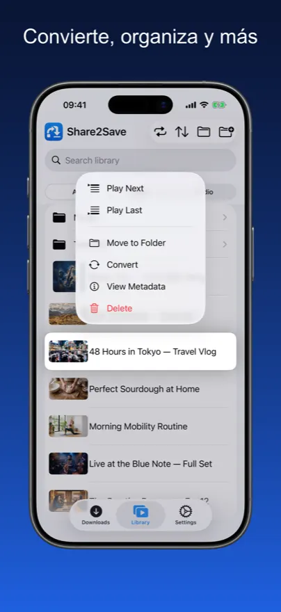
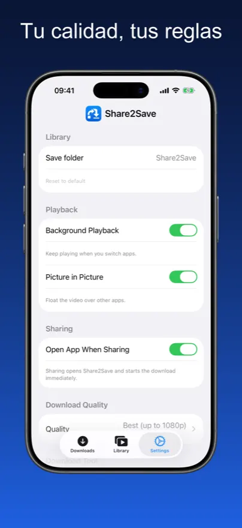

Tu biblioteca sin conexión.
Desde cualquier enlace.
Guarda vídeos y audio desde cualquier enlace en tu biblioteca personal y míralos cuando quieras, donde quieras — sin buffering, sin conexión de datos.
Tu biblioteca multimedia sin conexión
Capturas de pantalla reales de la app — guarda un enlace, mira sin conexión, gestiona tu biblioteca.







Del enlace a la biblioteca en 3 toques

Toca Compartir
En Safari, Chrome o Firefox, toca el botón Compartir y selecciona Share2Save en el menú.
La descarga comienza
Share2Save descarga el vídeo o audio en segundo plano, incluso después de cerrar la app.
Mira sin conexión
Abre tu biblioteca cuando quieras — sin internet. Continúa exactamente donde lo dejaste.
Diseñada para el offline. Diseñada para la privacidad.
Cada función fue diseñada con un objetivo: tu contenido, disponible cuando lo necesitas.
Biblioteca multimedia personal
Navega por todo tu contenido guardado en una biblioteca limpia con pestañas separadas de Vídeo y Audio. Continúa donde lo dejaste.
Guardar con un toque
Comparte cualquier URL de vídeo o audio desde Safari, Chrome o Firefox directamente a Share2Save. La descarga comienza de inmediato.
Descargas en segundo plano
Las descargas continúan mientras cambias de app, bloqueas la pantalla o haces cualquier otra cosa. Tu descarga nunca se interrumpe.
Widget en la pantalla de bloqueo
Un widget de Actividad en Vivo muestra el progreso de la descarga directamente en la pantalla de bloqueo. Requiere iOS 16.2+.
Imagen en imagen
Coloca el vídeo en una superposición flotante y sigue mirando mientras usas otras apps. Multitarea real sin perderte nada.
Control de calidad
Elige la mejor disponible, 1080p MP4, 720p o solo audio. Configúralo una vez en Ajustes y cada descarga respeta tu preferencia.
Privacidad ante todo
Sin cuenta necesaria. Sin anuncios. Sin rastreo. Todo almacenado localmente en tu dispositivo — nada se envía fuera.
Todo lo que necesitas, nada más
Tu contenido. Tu dispositivo. Tus reglas.
Sin nube. Sin suscripción. Sin compromisos.
Funciona en aviones
Descarga antes de volar y mira listas completas a 10.000 metros sin pagar por el Wi-Fi.
Ahorra datos móviles
Descarga una vez con Wi-Fi, mira para siempre sin consumir tu tarifa de datos.
Reproducción a pantalla completa
Reproducción inmersiva en pantalla completa con soporte de imagen en imagen para multitarea real.
Cero rastreo
Sin análisis, sin datos enviados. Tus hábitos de visualización son tu vida privada.
Reproducción instantánea
Sin buffering, sin carga. Los archivos se reproducen desde el almacenamiento local a máxima velocidad, al instante.
Disponible en 10+ idiomas
La app está completamente localizada para que la interfaz se sienta natural en cualquier lugar del mundo.
Preguntas frecuentes
Share2Save funciona con una amplia variedad de URLs de vídeo y audio — incluidos YouTube, Vimeo y muchos podcasts. Las plataformas con protección DRM (como Netflix o Spotify) no pueden descargarse porque su contenido está cifrado. Share2Save está diseñada para contenido al que tienes derecho de acceso.
Sí. Share2Save usa la tecnología iOS Background URL Session para que las descargas continúen incluso al cambiar de app o bloquear la pantalla. En iOS 16.2 y posterior, un widget de Actividad en Vivo en la pantalla de bloqueo muestra el progreso en tiempo real.
Totalmente a tu elección. Elige ajustes de calidad para equilibrar el tamaño del archivo y la calidad: 1080p MP4 para la mejor calidad, 720p como punto medio, o solo audio para almacenamiento mínimo. Puedes eliminar los archivos guardados en cualquier momento.
Completamente local. Share2Save no requiere cuenta y no envía ningún dato a ningún lugar. Los archivos descargados se almacenan íntegramente en tu dispositivo y nunca se suben ni se comparten. Nada sale de tu teléfono.
Sí — ese es el objetivo principal. Una vez descargado un archivo, está disponible indefinidamente sin conexión a internet. Perfecto para vuelos, desplazamientos diarios o cualquier lugar con datos limitados.
Sí. Sin suscripción, sin compras dentro de la app, sin anuncios. Share2Save es completamente gratuita.
Tu contenido. En cualquier lugar. Sin conexión.
Descarga Share2Save gratis en iPhone y iPad.
Descargar en App StoreGratis · iPhone y iPad · iOS 16+